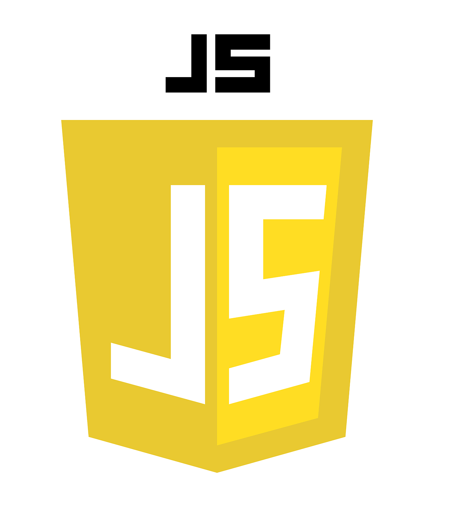

自己紹介
垣地 優輔
一九九六年一月三日富山県氷見市生まれ、高校大学では電気電子工学へ進学。
その後、一部上場の医療機器メーカーのフィールドエンジニアとして就職。
日々の業務では、丁寧な仕事と顧客から相談しやすい、されやすい環境作りを心がけ 思いがけない受注に繋がる事もありました。
趣味は、釣り・カラオケ・楽器で、最近はカメラも始めました。
私の思い
三人兄弟の末っ子として生まれ、いつも兄弟の後ろについていくことが多かった私は 何にでも興味を示し、周りのやっていることの真似ばかりをしていました。しかし負けず嫌いであったこともあり、兄弟であっても生意気にも喧嘩ばかりしていました。
そんな兄の背中を追い、同じ高校に進学し 真面目な兄 と 生意気な弟 と比較されることの多い高校生活でしたが 級友や先輩方に恵まれ、笑顔の絶えない生活でした。
高校大学では、吹奏楽部に所属し全国大会で金賞を取れたことは今でも良い思い出です。
ですがそれ以上に、小さな部ながらもリーダーを任され後輩の育成や悩みを考える。組織全体の在り方を考えることが今でも活かされている最も良い経験だったと考えます。
就職してからは、今までと全く違う医療という分野。看護士から医師といった幅広い役職の顧客感情に苦戦しながらも 相手の潜在ニーズを捉え、真摯に対応する事を心がけながらも親しみやすい人柄であり続けることを意識し、 「垣地さんだからお願いしたいよ」と嬉しい言葉を頂くことも多くなりました。
これからも相手目線で物事を考えることを第一とし、業務に励みたいと思います。
できること
-

HTML
html記述のルールを理解し
見やすいhtmlのコードを書くことができます。
-

CSS
BEM命名規則に基づいたCSS設計をすることで保守性に優れたCSSを書くことができます。 よく命名時の単語名を悩んでいます....。
-

JavaScript
ライブラリに頼らないVanilla JSを書くことができます。 dataクラスやAPIの利用、フェードインやスライドといったアニメーションを実装することができます。 （ライブラリを使用しての実装もできます。）
-
.png)
Sass
SCSSを利用したコーディングができます。ネストやincludeを用いたコーディングを行います。
-

GitHub
GitHubの基本的な操作をすることができ、共同開発をすることができます。
-

Docker
基本的な操作をすることはできますが、まだまだ勉強中です。
制作物
クリニックの模擬LP
架空のクリニックのHPです。フェードインアニメーションやスライダーアニメーションを 使用し、全体的に丸みを帯びたレイアウトが特徴的です。

Co-design Studioの模写
Co-designStudio様のHP模写です。シンプルなレイアウトですが、実績(works)では スクロールアニメーションを使用。ナビゲーションメニューやメニューボタンの実装 もされています。
20+ JavaScript Apps
JavaScriptを使用した小さなアプリケーションです。 全てVanillaJSで記述し、お問い合わせフォームや通貨レート計算などの アプリケーションがあります。※更新中